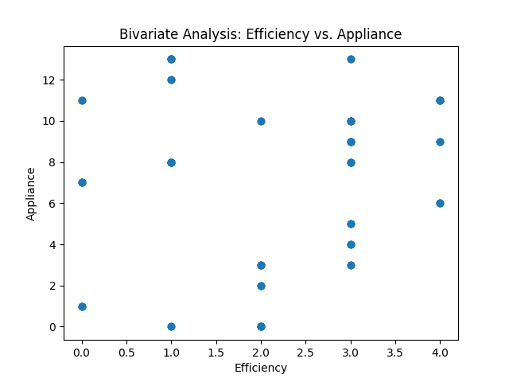
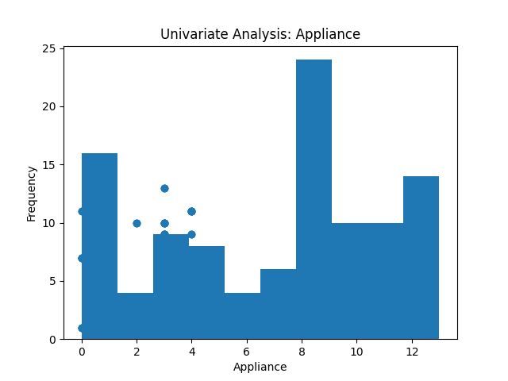
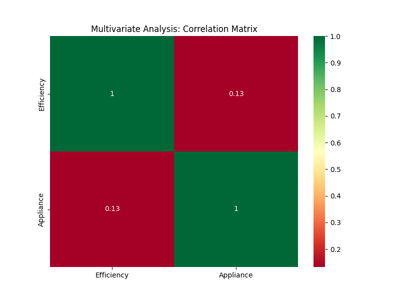
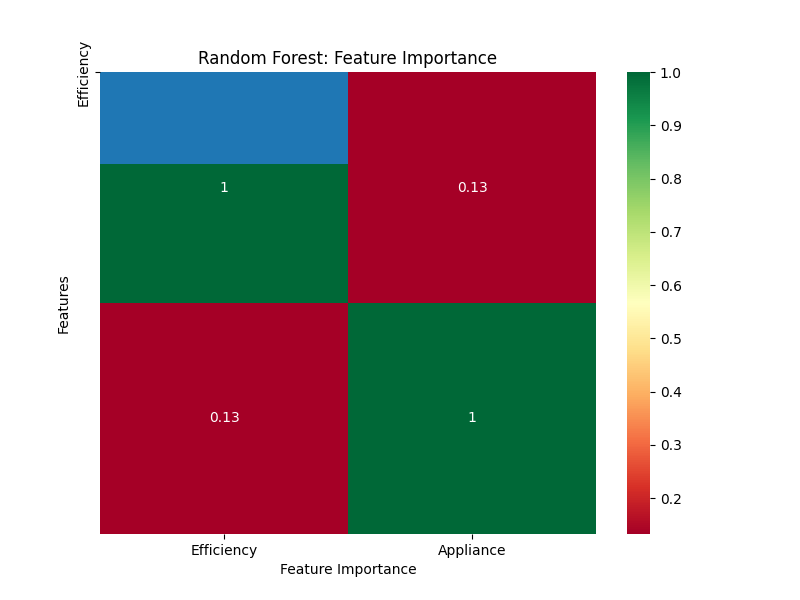

EXIT
Bivariate Analysis: Efficiency vs. Appliance

The scatter plot above illustrates the relationship between "Efficiency" and "Appliance." Each data point represents a specific combination of efficiency and appliance. The horizontal axis represents the efficiency values, while the vertical axis represents the appliance values.
Toggle Text
Univariate Analysis: Appliance

The histogram above represents the distribution of the "Appliance" variable. The x-axis displays the different categories or types of appliances, while the y-axis represents the frequency or count of each category.
Toggle Text
Multivariate Analysis: Correlation Matrix

The correlation matrix heatmap provides visual representation of the correlations between different variables in the dataset. The heatmap uses a color scale to indicate the strength and direction of the correlations. Positive correlations are shown in shades of green, negative correlations in shades of red, and no or weak correlations in shades of yellow. The numerical values in each cell of the heatmap provide additional information about the strength of the correlations.
Toggle Text
Random Forest: Feature Importance

The code provided generates a horizontal bar chart to visualize the feature importances in a random forest model. The feature importances represent the relative importance of each feature in predicting the target variable. The y-axis of the chart represents the different features, while the x-axis represents the corresponding feature importance values. Each bar in the chart represents a feature, and its length corresponds to its importance value.
Toggle Text